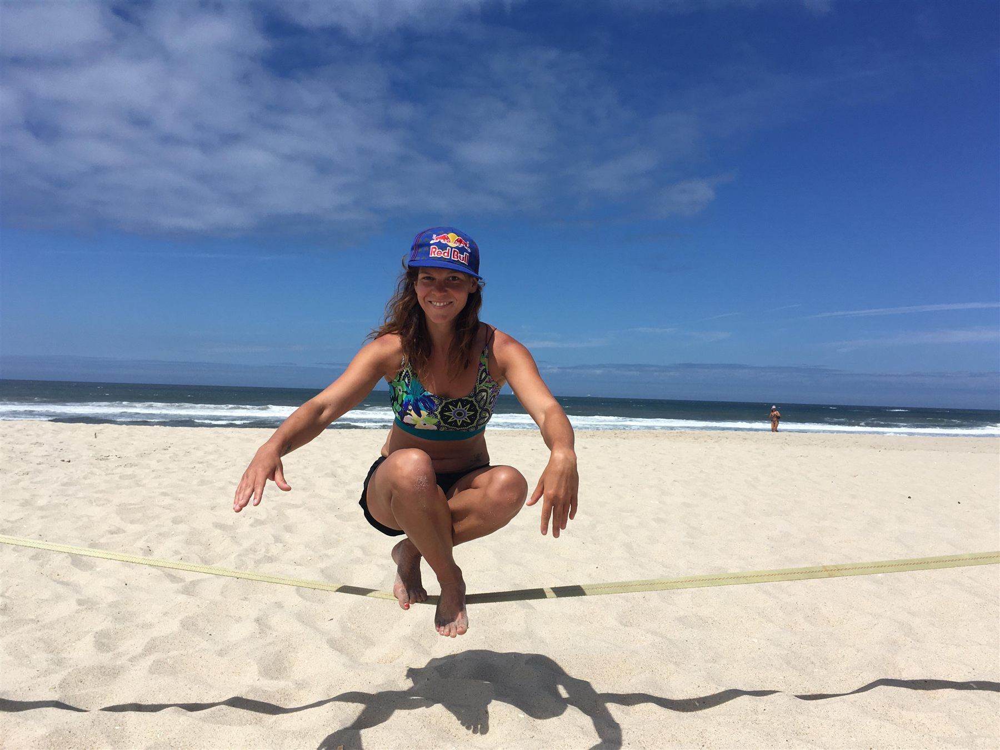
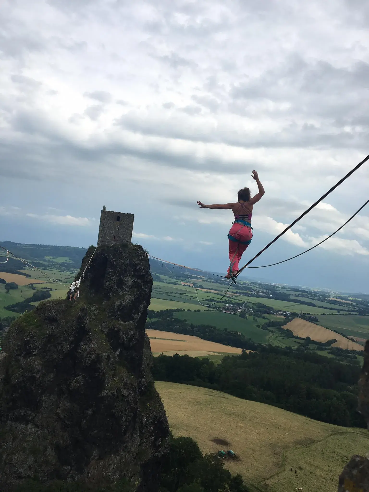
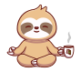

Kdo stojí za
Slackline Hrou?
Jmenuji se Terka a už více než deset let mě slackline učí trpělivosti, odvaze a radosti z pohybu. Dnes své zkušenosti předávám dětem, studentům i dospělým.


Proč právě slackline?
Slackline je pro mě způsob, jak na chvíli zpomalit a být opravdu přítomná. Když stojím na lajně, soustředím se jen na další krok. Starosti, povinnosti a každodenní shon zůstávají na chvíli stranou.
Právě to mě na slackline baví nejvíc. Neustále mi připomíná, že pokrok nepřichází přes noc. Někdy člověk spadne hned po prvním kroku, jindy se dostane dál, než čekal. A právě v tom je její kouzlo.
Za více než deset let mi slackline přinesla nejen spoustu zážitků, ale také trpělivost, vytrvalost a radost z malých vítězství. Pokaždé odcházím s čistou hlavou, novou energií a úsměvem na tváři.
Proto své zkušenosti ráda předávám dál. Chci ukázat dětem i dospělým, že začátky nemusí být dokonalé a že i nejistý první krok může vést k něčemu, co si zamilují stejně jako já.
Kdo jsem
Jmenuji se Terka a od malička jsem se věnovala práci s dětmi. Volný čas o prázdninách jsem trávila jako instruktor na táborech a animátor v zahraničí. Vystudovala jsem SPGŠ v Přerově a OSU v Ostravě. Jsem snílek a věřím, že když člověk něco chce, tak i nemožné se stává možným. Stejně jako chodit mezi nebem a zemí. Mám ráda dobrou kávu i společnost a miluji večery s kytarou venku u ohně.
Příběh mě a „lajny"
I mně se na začátku třepaly nohy a nebyla jsem schopna udělat ani krok!
První lajnu jsem si koupila asi deset let zpátky, když jsem seděla pod orlojem na Staroměstském náměstí a pozorovala blázny chodící po tenké lajně nad mou hlavou. Přišlo mi to zhola nemožné. Nikdy bych tenkrát nevěřila, že i já dokážu chodit vzduchem.
Se začátkem highline přišlo zlo jménem slacklife. Objíždění festivalů, víkendy na highline, modřiny a radost z nového života. Nával endorfinů, úsměv od ucha k uchu a záře v očích – takové byly mé první pocity při přechodu highliny.
Trickline miluji a lítat vzduchem mě fakt baví. Nikdy jsem se do tohoto odvětví ale pořádně nevrhla, protože to fakt bolí.
Ve slackline jsem našla práci, která mě baví a dává mi smysl. Přešla jsem 100 m longline a tahle délka v parku nad zemí mi stačí.

Hodnoty, na kterých stavím
Věřím, že pohyb může být hrou, zážitkem i cestou k sobě samému.
Zajímavosti o mně
- Miluji dobrou kávu
- Večery u ohně s kytarou
- Čas strávený venku v přírodě
- Věřím, že i zdánlivě nemožné se může stát možným
